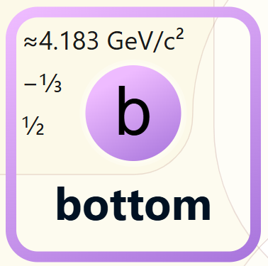

< Back
The bottom quark is one of the six types of quarks in the Standard Model of particle physics. It's a heavier cousin of the up and down quarks and is found in particles like the B Meson.

Bottom quarks are typically produced in the decay of Higgs bosons.